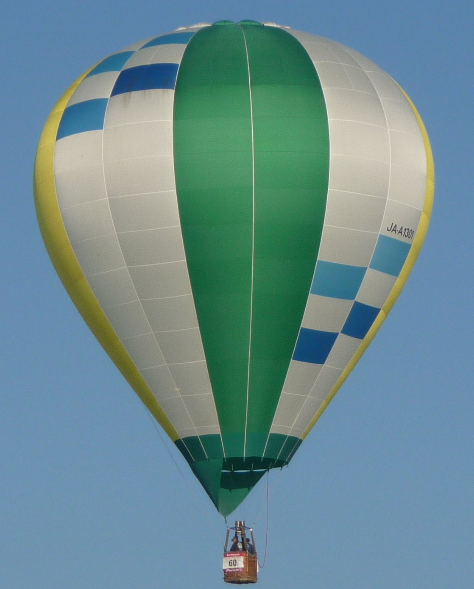
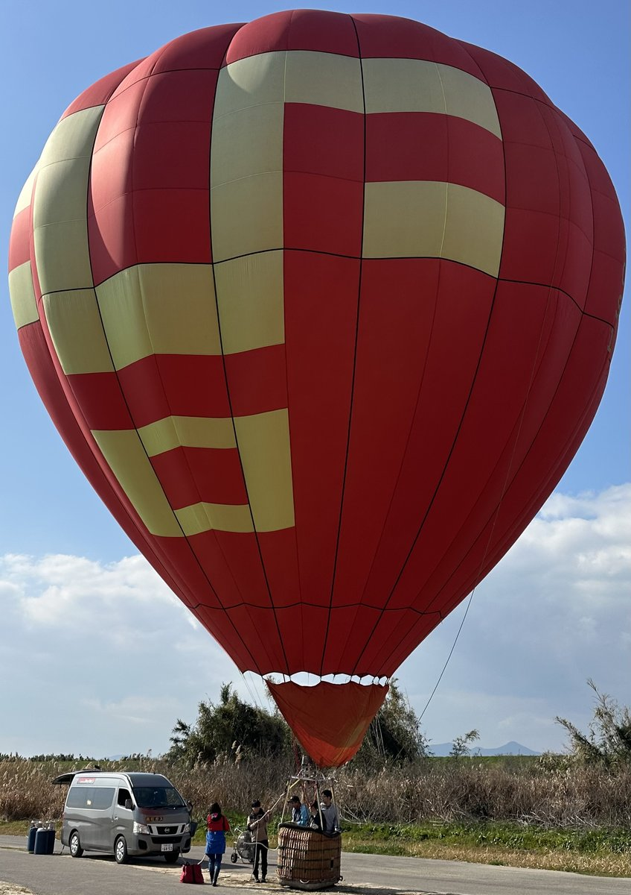

Fukuoka University Hot Air Balloon Club
佐賀インターナショナルバルーンフェスタへの出場を目指して。
部員50名以上が、アジア最大級の舞台に挑む。
About Us
Activities
福岡大学から佐賀のフライトエリアまで約1時間。早朝の風が安定した時間帯に定期的に飛行訓練を実施しています。熱気球の操縦には気象の読み方・バーナー操作・風向きの判断など高度な技術が必要で、部員50名以上が役割分担しながら安全第一で訓練に取り組んでいます。
全日本学生選手権への出場を目指すほか、夏には北海道上士幌町で開催される「北海道バルーンフェスティバル」への遠征も実施。福岡を飛び出し、全国の仲間・ライバルと交流しながらレベルアップを図っています。
地域イベントでの係留飛行体験を実施。巨大な熱気球を間近で見て・触れてもらうことで、熱気球の魅力を地域に広めています。スポンサー企業のロゴを掲げた気球は、イベントのたびに多くの人の目に触れる「空飛ぶ広告塔」になります。
熱気球の安全な運用には、バルーン本体・バーナー・バスケットの定期点検が欠かせません。整備担当メンバーが中心となり、飛行前後の機材チェックや修繕を行っています。この地道な作業が安全なフライトを支えています。
Our Balloon

Inom Balloons製「佐賀平野のトキメキ」（JA-A 1301）。 BT.トピアより2024年に譲渡していただきました。 緑・黄・白・ブルーのカラーリングをまとった機体は、空でもひときわ目を引きます。

Aerostar製「赤丸」（JA-A 1091）。 赤と黄のビビッドなカラーリングが特徴の機体で、大空でもひと目でわかる存在感を放ちます。
Become a Sponsor
私たちの目標は、佐賀インターナショナルバルーンフェスタへの出場です。
機体の購入・維持費・大会参加費のご支援が、その夢への第一歩になります。
私たちの挑戦を支えていただける企業・団体様を募集しています。条件はすべてご相談ください。
競技・イベントで空高く舞う熱気球の機体に、貴社ロゴを大きく掲載。大会・メディアを通じて多くの方の目に届きます。
公式サイトおよびSNS（Instagram・X）にスポンサーとしてご紹介します。
学祭・地域イベント・競技大会での横断幕・告知物に貴社名を掲載します。
飛行見学・係留体験への招待など、貴社と学生の交流機会をご提供します。
詳細・条件はすべてお問い合わせください。
お気軽にご連絡いただけますと幸いです。
Social Media
活動の様子・飛行レポート・大会情報をSNSで随時更新しています。
フォローしてサークルの最新情報をチェックしてください。
Latest News & Blog
note
活動レポートはnoteで更新中。
飛行の記録・大会レポート・サークルの日常を発信しています。
Contact
スポンサーに関するご相談・ご質問は、お気軽にご連絡ください。
まずはメールまたはSNSのDMでご連絡いただけますと幸いです。